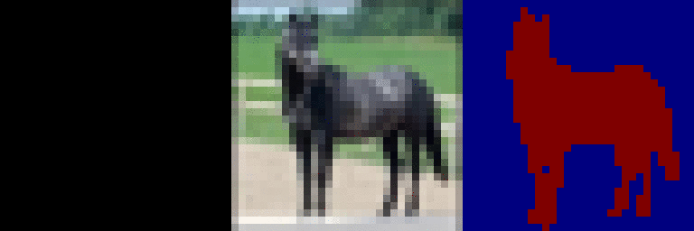
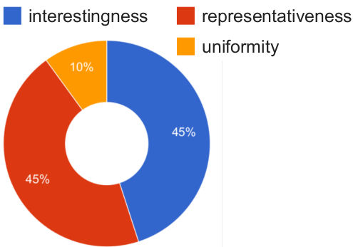
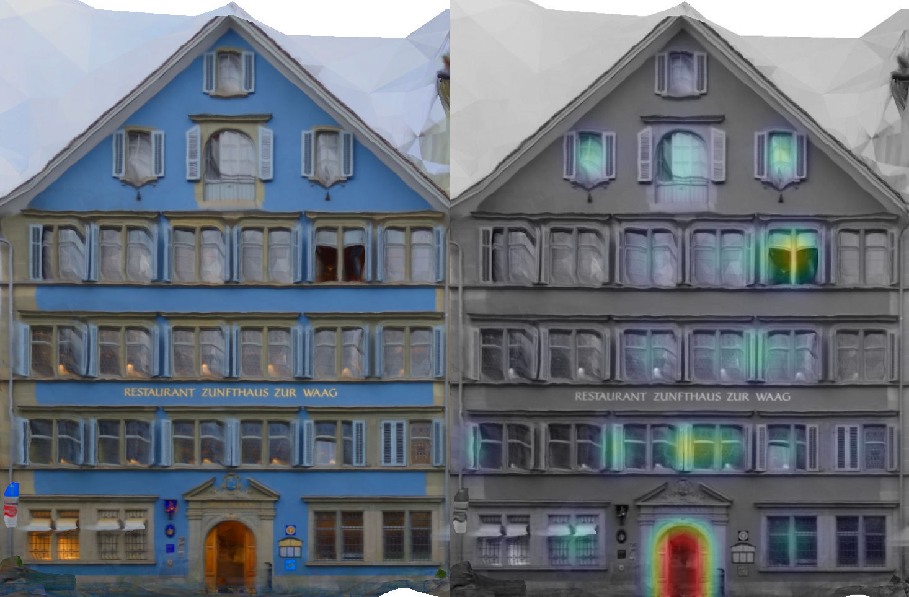
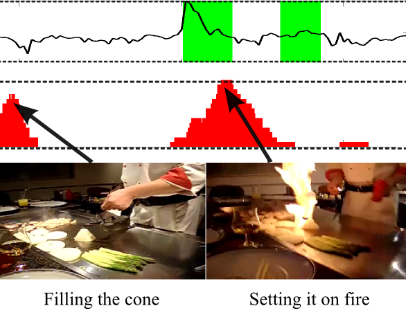
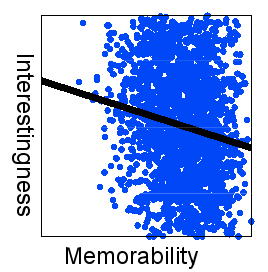
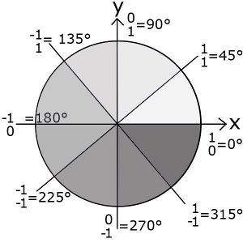

On this page you find a list of my publications, ordered by year. For datasets or code for a particular publication see the corresponding project page.
My Google scholar account is available here.
AENet: Learning Deep Audio Features for Video.
N. Takahashi, M. Gygli, L. Van Gool. In Transactions on Multimedia 2017
| |
PathTrack: Fast Trajectory Annotation with Path Supervision.
S. Manen, M. Gygli,
D. Dai, L. Van Gool. In ICCV 2017
| |
Query-adaptive Video Summarization via Quality-aware Relevance Estimation.
A. Vasudevan , M. Gygli (equal contribution),
A. Volokitin, L. Van Gool. In ACM Multimedia 2017
| |
|  | Deep Value Networks Learn to Evaluate and Iteratively Refine Structured Outputs.
M. Gygli,
M. Norouzi, A. Angelova. In ICML 2017
|
Ridiculously Fast Shot Boundary Detection with Fully Convolutional Neural Networks. M. Gygli. arXiv 2017
|
Analyzing and Predicting GIF Interestingness.
M. Gygli,
M. Soleymani (equal contribution). In ACM Multimedia 2016
| |
Deep Convolutional Neural Networks and Data Augmentation for Acoustic
Event Detection.
N. Takahashi M. Gygli,
B. Pfister, L. Van Gool. In InterSpeech 2016
| |
Video2GIF: Automatic Generation of Animated GIFs from Video.
M. Gygli, Y. Song, L. Cao. In CVPR 2016
| |
Predicting When Saliency Maps are Accurate and Eye Fixations Consistent.
A. Volokitin, M. Gygli, X. Boix. In CVPR 2016
|
ETH-CVL @ MediaEval 2015: Learning Objective Functions for Improved Image Retrieval.
S. Srivatsa R, M. Gygli, L. Van Gool. In MediaEval 2015
| |
|  | Video Summarization by Learning Submodular Mixtures of Objectives. M. Gygli, H. Grabner, L. Van Gool. In CVPR 2015
|
|  | Navigation using Special Buildings as Signposts. J. Weissenberg M. Gygli, H. Riemenschneider, L. Van Gool. In MapInteract 2014
|
|  | Creating Summaries From User Videos. M. Gygli, H. Grabner, H. Riemenschneider, L. Van Gool. In ECCV 2014
|
|  | The Interestingness of Images. M. Gygli, H. Grabner, H. Riemenschneider, F. Nater, L. Van Gool. In ICCV 2013
|
|  | Sparse Quantization for Patch Description. X. Boix, M. Gygli, G. Roig, L. Van Gool. In CVPR 2013
|
On Feature Encoding for Binary Descriptors. M. Gygli. Master Thesis at University of Nice Sophia Antipolis
|